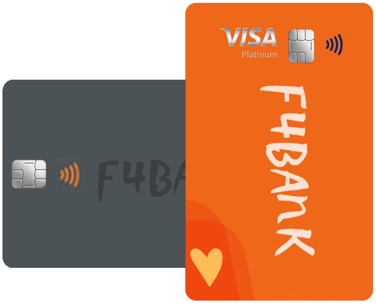

F4BANK, um
banco completo na palma da sua mão.
Agora você também pode abrir a sua conta F4BANK de forma 100% digital, sem precisar sair de casa e podendo se beneficiar dos nossos diversos produtos
bancários.
 Com a F4bank você também pode pedir seu cartão de crédito ao abrir sua conta. Tenha um cartão online antes mesmo do seu físico chegar, controle seus gastos com o App F4bank e ainda tenha a possibilidade de ficar livre da anuidade, e ganhar até 20% em cashback.
Com a F4bank você também pode pedir seu cartão de crédito ao abrir sua conta. Tenha um cartão online antes mesmo do seu físico chegar, controle seus gastos com o App F4bank e ainda tenha a possibilidade de ficar livre da anuidade, e ganhar até 20% em cashback.
Com a F4bank você também pode pedir seu cartão de crédito ao abrir sua conta. Tenha um cartão online antes mesmo do seu físico chegar, controle seus gastos com o App F4bank e ainda tenha a possibilidade de ficar livre da anuidade, e ganhar até 20% em cashback.
